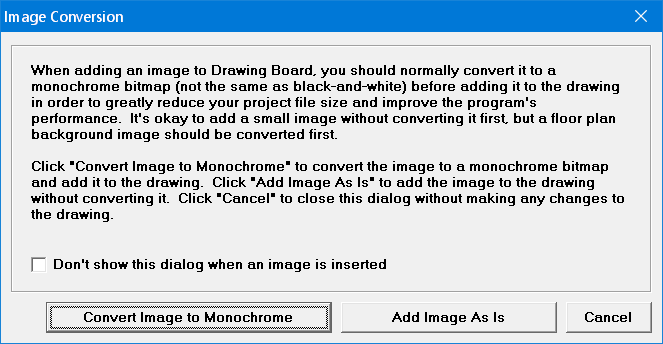

Image Conversion |
  
|
Image Conversion |
|
Opens when you add an image to the drawing using one of the following menu items:
·Edit | Paste
·File | Import | Into Drawing
·Drawing Board Tools | Import Into Drawing
This dialog lets you choose to automatically convert the image you are adding to the drawing to a monochrome bitmap, greatly reducing your project file size, and significantly improving performance. It is especially important to convert to monochrome when adding a floor plan image, because of its size.

Don't show this dialog when an image is inserted: When checked, makes it so this dialog is not shown the next time you add an image to the drawing, and any images you add will be added without conversion. If you do check this box, you can turn this feature back on by checking the "Dont show Image Conversion dialog when inserting an image" option on the Drawing Board Options dialog.
Convert Image to Monochrome: Converts the image to a monochrome bitmap before adding it to the drawing. The image quality is usually good enough using this option, but if you would like to do the conversion manually you might get a clearer image. The steps to do the conversion manually are given in the Importing a Floor Plan PDF Image topic.
Add Image As Is: Adds the image to the drawing without changing its format.
Cancel: Closes this dialog without making any changes to the drawing.